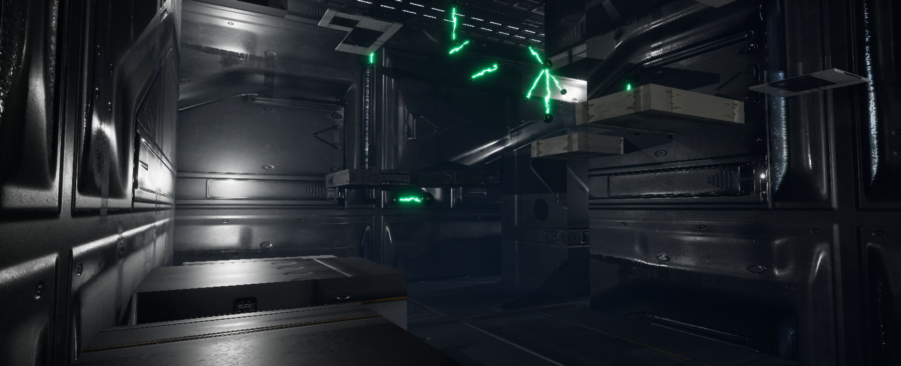
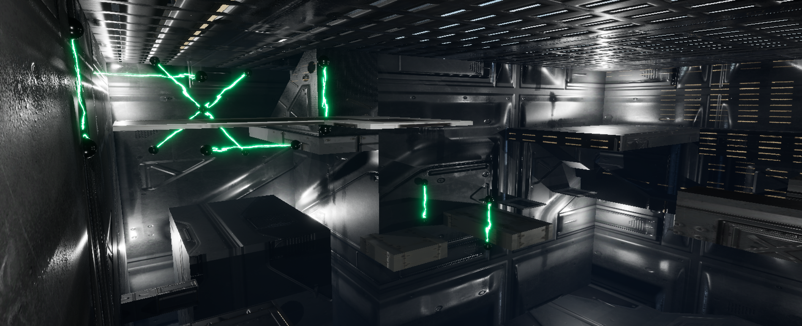

Game Design Platforming Projects
Unreal Engine, C++ Programming, Level Design



A project for a class on Game Design and Implementation
The requirements for the project simply stated
"You must have the following in your game:
- A Main Menu and a Win/Lose Screen
- A Character that can go left, right, forward, backward, and jump. All movement must be animated except for jump A landscape or CubeGrid with appropriate materials and jumpable platforms scattered throughout
- A TriggerVolume that acts as the endpoint of the game. This could be visually designated in the game in combination with something related to the character (e.g., a large acorn actor if you use our squirrel friend above)
- A Timer that counts down as time progresses visible on the HUD"
I personally decided to go above and beyond and use this as an exercise in level design and working with Unreal Engine's tools.
The final result was especially noted for being well done. With a created environment, a fully implemented jumping animation, a timer that displays more than just seconds and that changes color when time gets low, moving platforms and obstacles, a health mechanic, and added UI elements.
A document with the assets used for the project can be found here